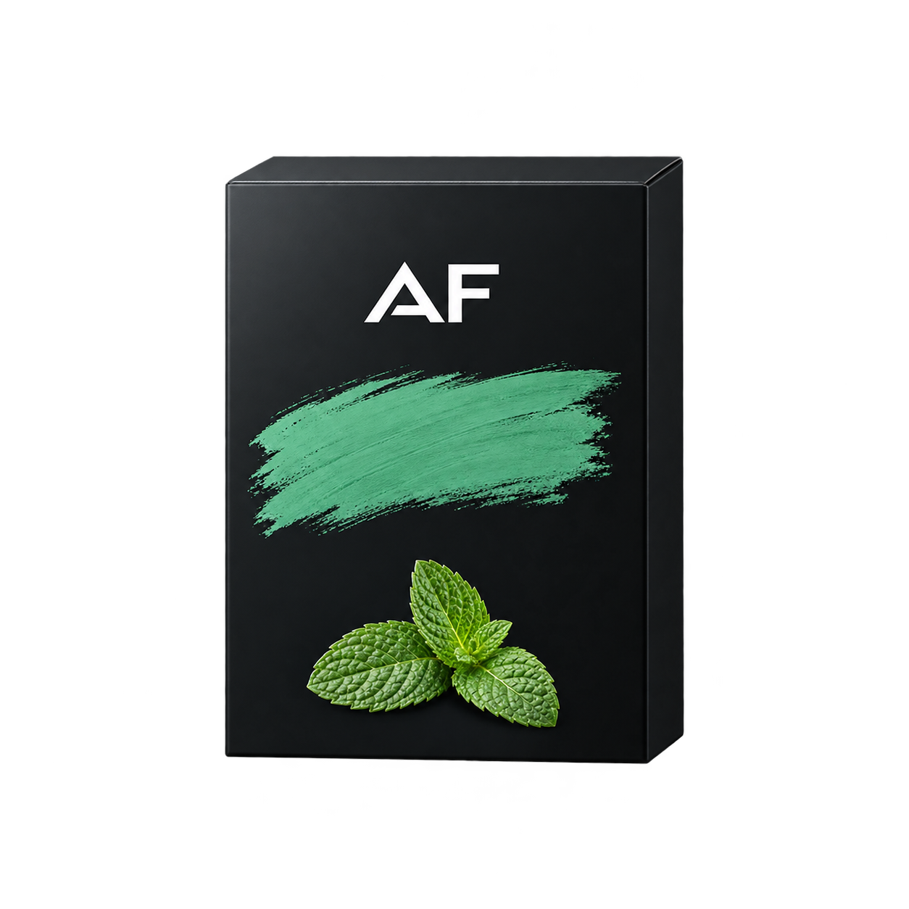
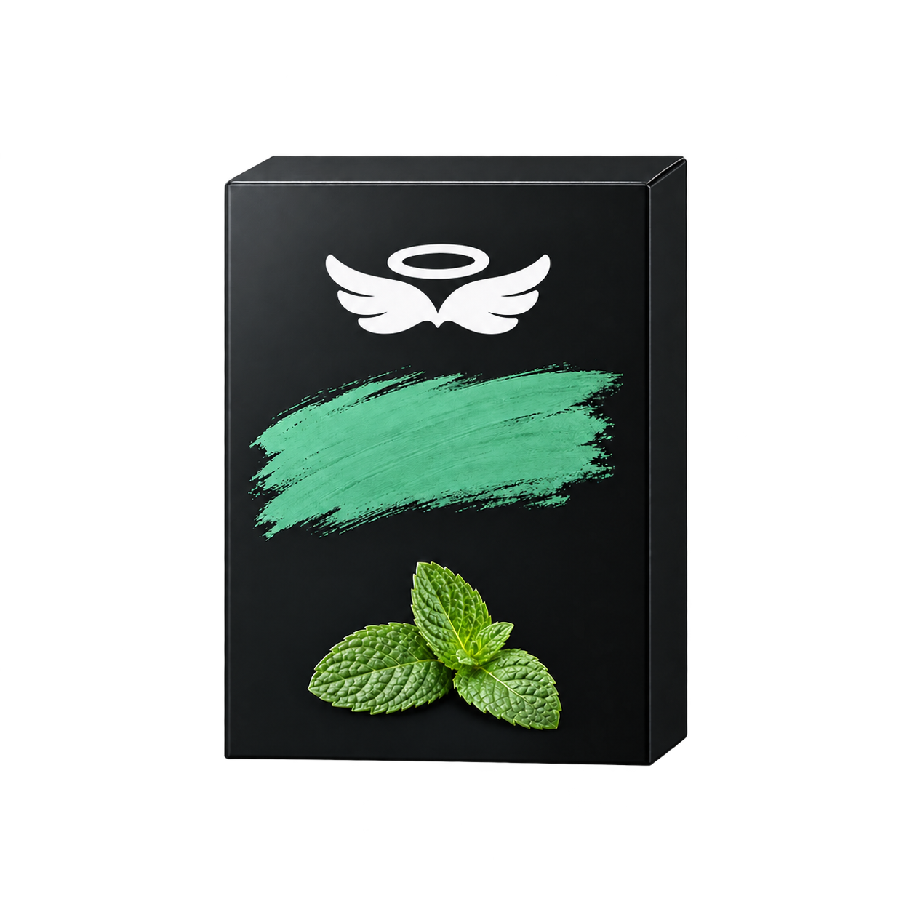
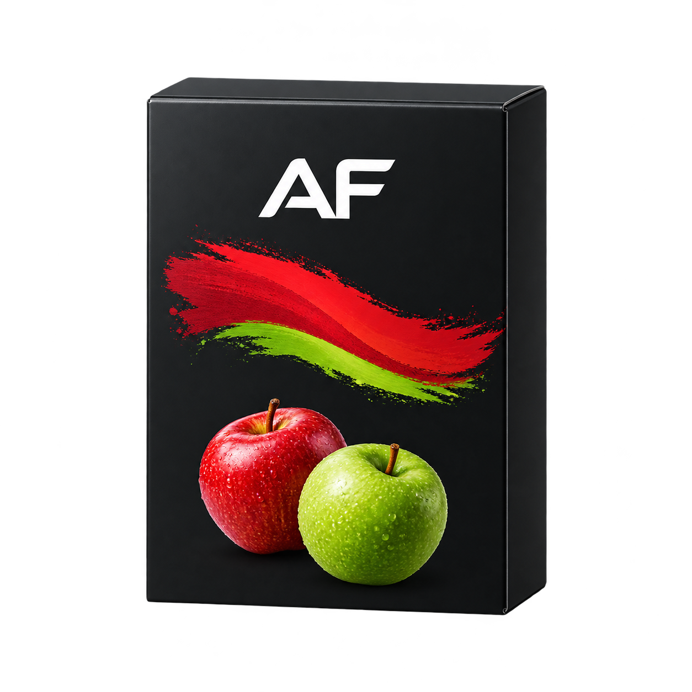
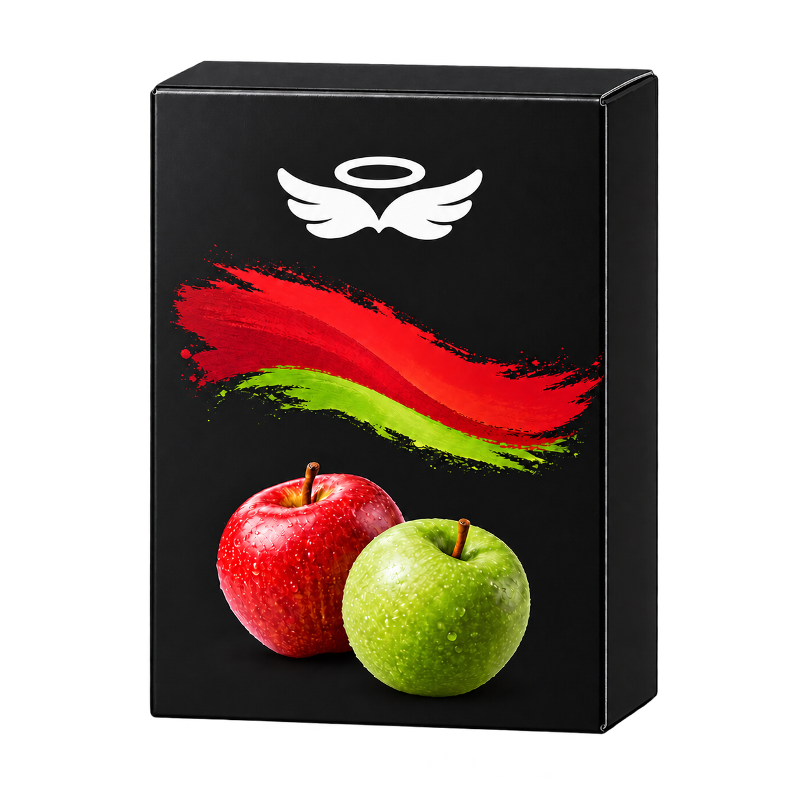
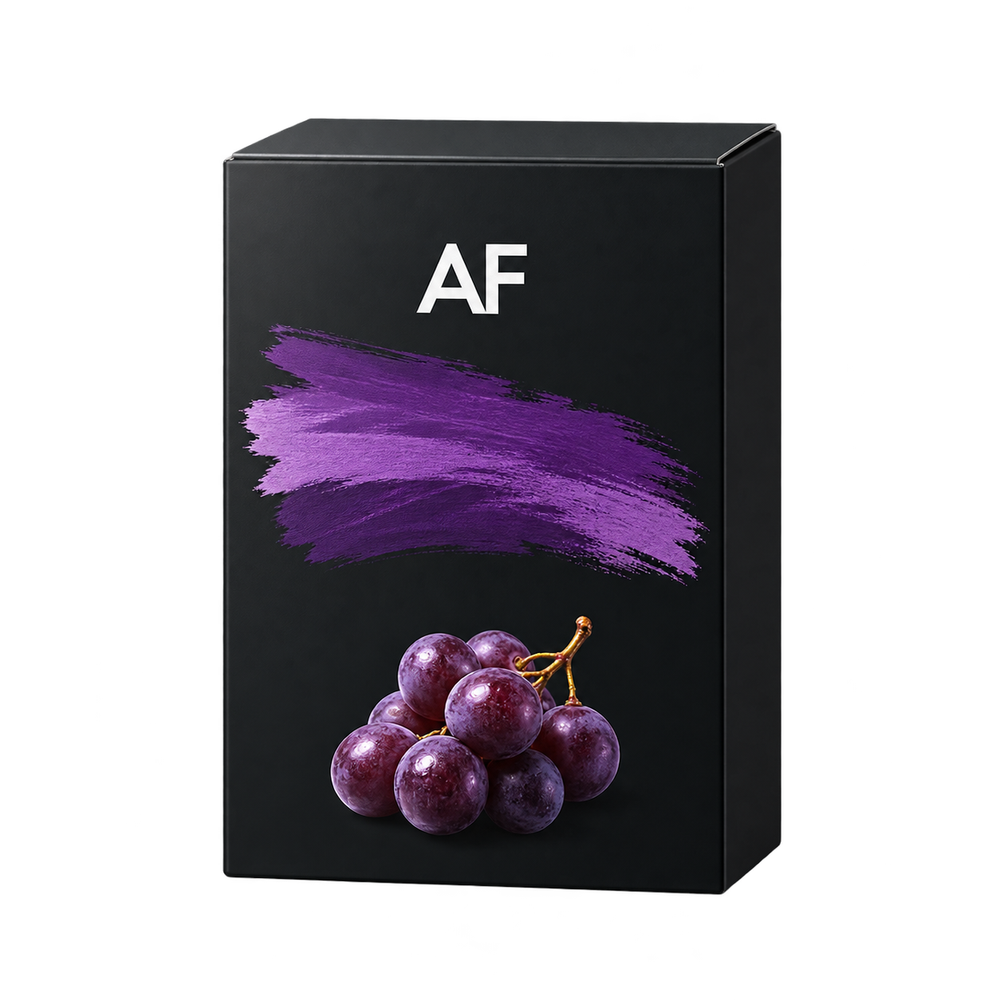
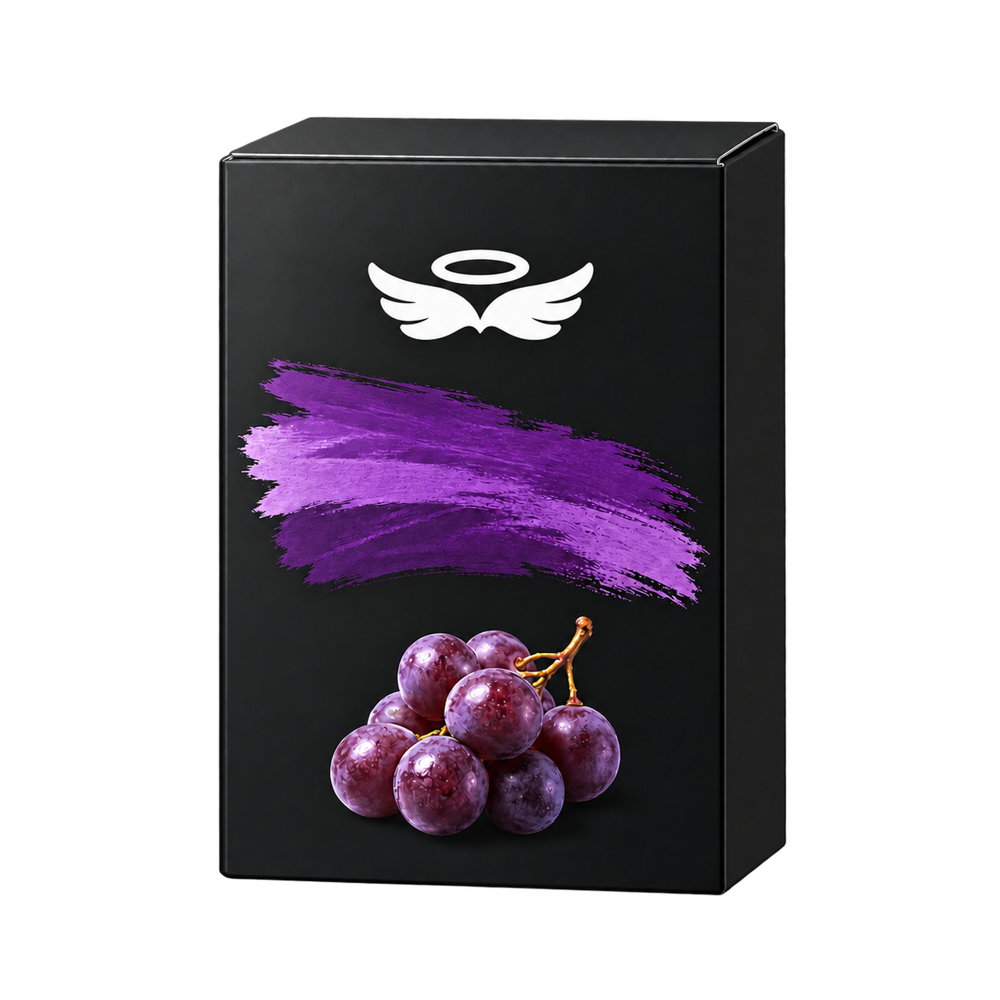

既存ブランド「アルファーヘブン」は維持。絵のAF文字だけを独立した白い翼＋輪へ変更。旧21点・v2箱・HMDは全て保持し、HMDは今回生成していません。
| 商品 | v2 AF版（保持） | v3 白い天使版（未採用） |
|---|---|---|
| アルファーヘブン ミント |  |  |
| アルファーヘブン ダブルアップル |  |  |
| アルファーヘブン グレープ |  |  |
共通マスター / マスター暗色背景プレビュー / 位置・大きさ計測 / 実プロンプト